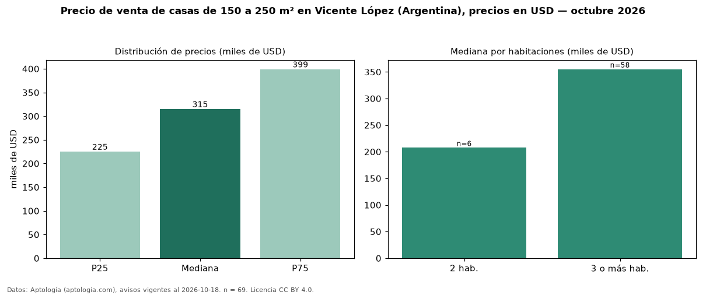

Precio de venta de casas de 150 a 250 m² en Vicente López (Argentina), precios en USD — octubre 2026
USD 315.000 es el precio mediano de casas de 150 a 250 m² en venta en Vicente López (Argentina) (n = 69 avisos). Frente a la mediana de todas las casas en venta de Vicente López (USD 249.500, n = 196), queda 26 % por encima; este segmento reúne el 35 % de esos avisos. Por metro cuadrado, la mediana es USD 1.734/m² (n = 69), 6 % por debajo del conjunto de referencia (USD 1.848/m²). El área mediana anunciada es 182 m². El segmento con más oferta es el de 3 o más habitaciones (58 avisos, mediana USD 355.000); pasar de 2 habitaciones a 3 o más habitaciones cambia la mediana +71 %. La mitad central de los avisos va de USD 225.000 a USD 399.000 (razón 1,8), una dispersión moderada. Datos: Aptología (aptologia.com), CC BY 4.0 — https://www.aptologia.com/ar/venta/vicente-lopez. Archivos: PDF, CSV con las cifras y gráfica PNG.

| Avisos únicos | 69 |
|---|---|
| Percentil 25 | COP 225.000 |
| Mediana | COP 315.000 |
| Percentil 75 | COP 399.000 |
| Mediana por m² | COP 1.733 |
Fuente: avisos vigentes de portales inmobiliarios recopilados por Aptología, deduplicados (mínimo 30 avisos únicos por celda). Precios pedidos, no cerrados. Fecha: 2026-10-18.